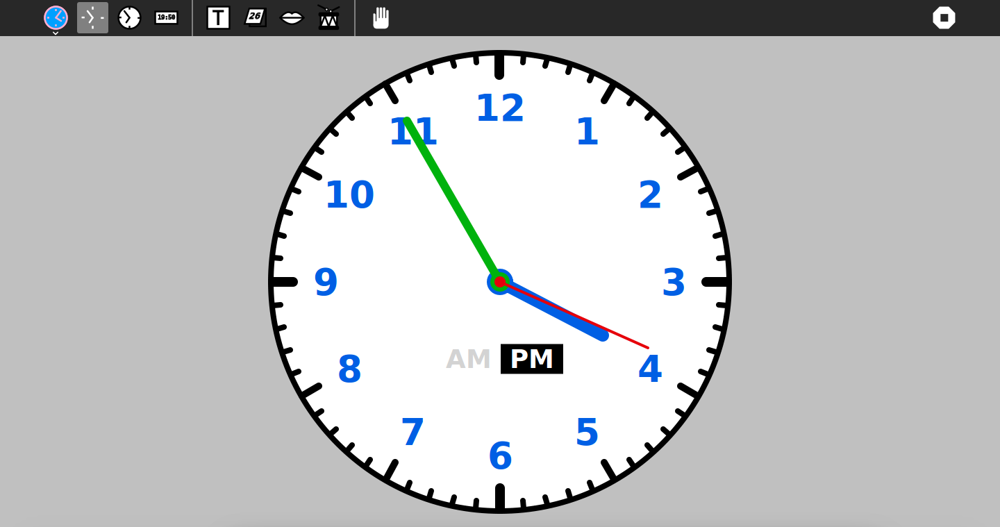
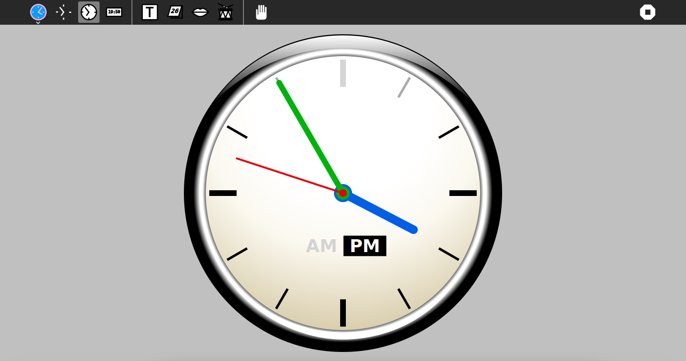
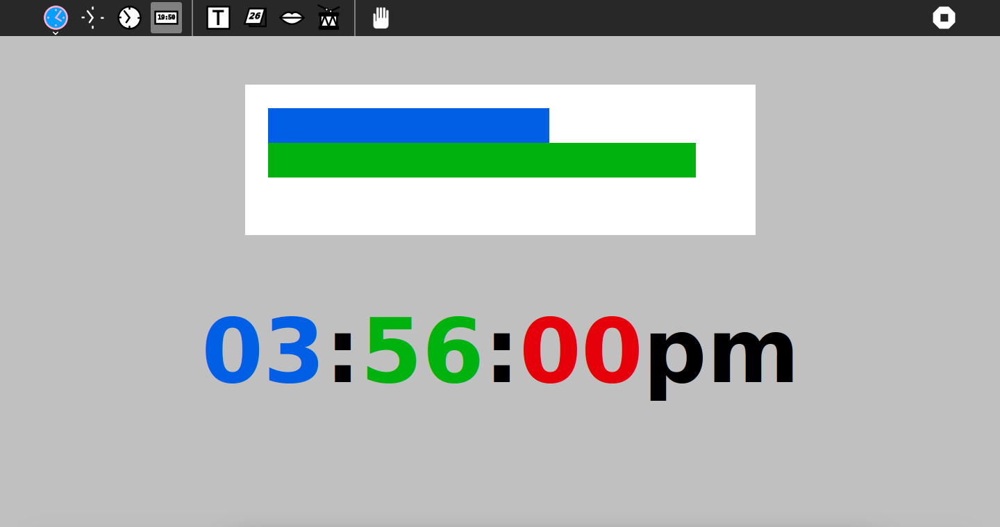
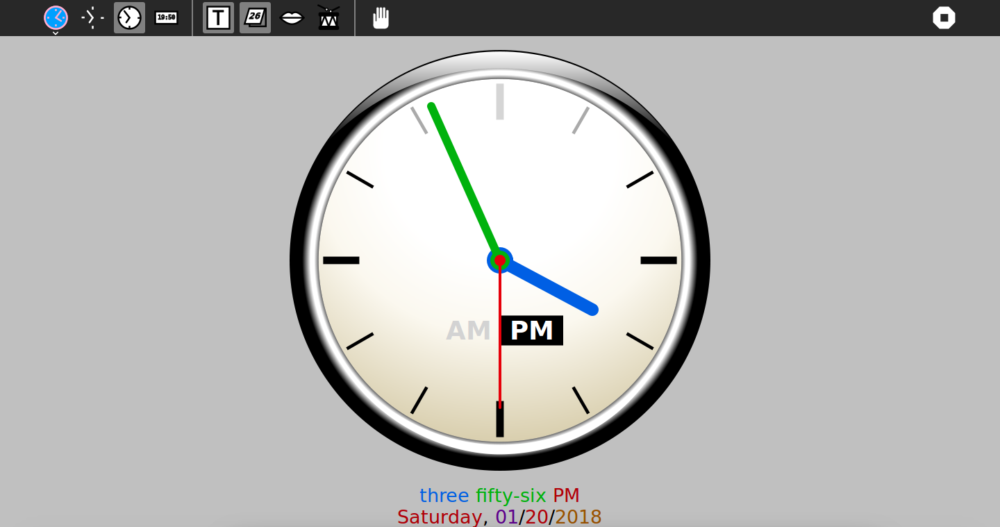
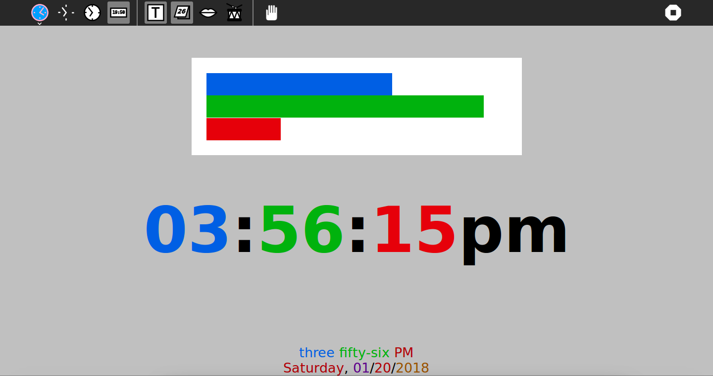
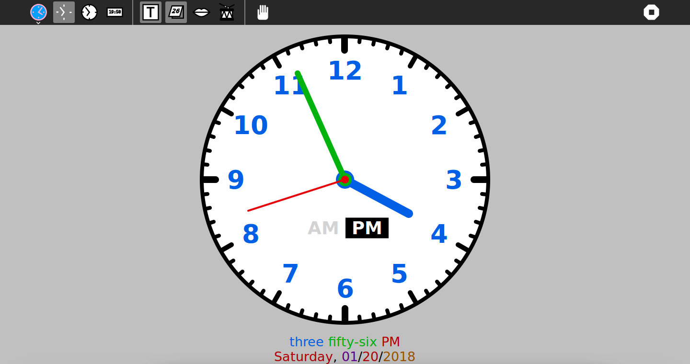

Clock¶
About¶
The Clock activity is for you to learn how to read time, even if you do not own a watch.



Where to get Clock¶
Clock activity is available for download from the Sugar Activity Library: Clock
The source code is available on GitHub.
Using Clock¶
Basic Functionality¶
Click on the toolbar buttons to change the display mode and options.
Display modes and options that are available:
Analog clock face
Colored analog clock face
A clock or watch is called “analog” when it has moving hands, and hours marked from 1 to 12, to show you the time.
Digital clock view
A digital clock is a type of clock that displays the time digitally (i.e. in numerals or other symbols)
Time in full letters
Weekday and date
Talking clock
A consistent color code is used throughout the activity so that:
Hours are always displayed in blue (#005FE4)
Minutes are always displayed in green (#00B20D)
Seconds are always displayed in red (#E6000A)
Days are always displayed in dark red (#B20008)
Months are always displayed in purple (#5E008C)
Years are always displayed in brown (#9A5200)
This color code influences the color of the display of the time in the analog clock, digital clock, talking clock and time and date display. The intent of keeping a simple and structured design is to allow you to understand that these are different representations of the same concept.
Learning with Clock¶
At a basic level, Clock allows you to learn how to tell time, which is a very important cognitive skill. Learning to tell time can be very useful for you in your daily life- you are able to know when you should wake up in time for school, when it is time for meals or allowing you to keep a timetable.
Learning to Count Time¶
The idea for having an analog display gives you a platform to learn counting as well. Given that a clock has distinguishing numbers from one to twelve and has five marks in between, you are able to know how to count by five when from “five-ten-fifteen-twenty” until you get to “sixty”.

Reading Time in Different Ways¶
You are able read the time in both the analog display and the digital display. Using the digital display, you are able to understand that time is displayed in the Hour:Minute:Second format. Moreover, with the option of having a 12-hour clock or a 24-hour clock, you are able to explore the concept of AM and PM, midnight, or afternoon, which gives a broader classification of time. Using the analog display, you are not only able to count time as well, you are able to visualize the idea of a 12-hour clock, where the clock makes 2 complete cycles in 24-hours. Jennie Ito, a PhD holder in Child Development, mentioned that analog clocks help children understand the passage of time because they have hands that are consistently moving. This idea was perfectly encapsulated in a ticking clock feature in Clock. Not only that, you can learn how to tell time in terms of day and date, which helps you understand what is meant by months and days.

Speaking Time¶
In an analog clock, the clock is divided into 12 sections and the hands move in a clockwise direction. The smaller hand gives the hour- for example, if the hour hand is pointing at 3, then it is currently 3 o’clock. In this case, the minute hand will be at 12, because it has made a complete cycle. If the minute hand is pointing to the clock number 1, you would say 5 minutes and this done by counting by 5s around the clock. However, if the minute hand is in between two clock numbers, you have to count by 5s until you get to the nearest clock number, and then count up by ones to figure out how many minutes you have.
In the digital clock, you can divide the display into three sections, the hour, minute and seconds.
The speaking time is given by the speaking mode, which tells time in ‘o’clock’, ‘three forty-five PM’ or ‘midnight’.
Learning about Angles¶
Angles are an important concept that can be learnt through Clock, especially since the hour and minute hand can be dragged. The hour hand of an analog clock turns 360° in 12 hours or 0.5° per minute. The minute hand rotates through 360° in 60 minutes or 6° per minute.

Finding the Geographical North or South¶
With the concept of telling time, you can find an analog watch and explore the concept of true North.
In the Northern Hemisphere…
Place the watch on a level surface, such as the ground, or hold it horizontal in your hand
Point the hour hand at the sun
Find the angle between the hour hand and the twelve o’ clock mark on the watch to find the north-south line
In the Southern Hemisphere…
Place the watch on a level surface, such as the ground, or hold it horizontal in your hand
Point the hour hand at the sun
Find the angle between the hour hand and the twelve o’ clock mark on the watch to find the north-south line
The centre of the angle between the hour hand and twelve o’clock mark is the north-south line. If you don’t know which way is north and which south, just remember that no matter where you are, the sun rises in the east and sets in the west. In the northern hemisphere the sun is due south at midday. If your watch is set to daylight saving time bisect the angle between the hour hand and the one o’clock mark instead.
Grabbing Hands¶
Many times, you would want to use the clock as a form of visualization- it represents a circle, it represents one point of 360°, it represents pi. There are so much that you can do with clock, and that is why, the grabbing hands feature was added. Instead of simply using the clock to learn about time, you can adjust the hour, minute and second hand in order to test your concept of the representing time, or to show the angles. Moreover, using the grabbing hands feature gives you the empowerment of controlling your own time, and teaches you the concept of time management.
Ticking Clock¶
Time passes really quickly, and that is why the ticking clock feature exists in order to provide an audio indication of the seconds that have past. You could use this feature as a metronome, which is a device used by musicians that marks time at a selected rate by giving a regular tick. If you are practising music or would just like to beat to a rhyhtm, it is useful for you to count on the ticking clock feature!
Where to report problems¶
Please report bugs and make feature requests at clock-activity/issues.
Credits¶
Clock was written under the Public Domain and GPLv3+ License.